This website uses cookies to ensure you get the best experience on it.
Love it, or leave it.
The ratios are in the shapes.
Introducing the Core Geometric System ™
Providing the best-established and most accurate framework to calculate area and volume using the 3D coordinate system.
Key Points:
- Comparative Geometry: Using geometric relationships to derive areas and volumes.
- Scaling and Proportions: Applying proportional relationships for accurate calculations.
- Algebraic Manipulation: Simplifying equations to ensure consistency and precision.
- Exact Values instead of Approximations: Prioritizing the use of simpler constants for practicality while maintaining exact values for accuracy.
1. Area of a Circle:
- Compared to a square, using geometric properties and the Pythagorean theorem.
- Formula: A = 3.2 × ( square value of the radius ).
2. Circumference of a Circle:
- Derived from the area by subtracting a smaller theoretical circle.
- Formula: C = 6.4 × radius.
3. Volume of a Sphere:
- Compared to a cube, using the area of the sphere's cross-section.
- Formula: V = " cubic value of ( √( 3.2 ) × radius ) ".
4. Volume of a Cone:
- Compared to an octant sphere and a quarter cylinder.
- Formula: V = 3.2 × ( square value of the radius ) × height, divided by √8 .
How Accurate Are The Conventional Geometry Formulas?
Historically, Euclidean geometry has provided a framework for understanding and describing the physical world. It is based on axioms and postulates, leading to well-defined formulas for the calculation of areas and volumes of shapes such as circles and spheres.
Setting the square and the cube as the basis of the area and the volume calculation is well established and straightforward. Regardless of the shape of the measured object, the unit of measurement of the area is square units and the volume can be expressed in cubic units.
Area of a square
A rectangle is a 2 dimensional plane shape. Its measurable properties are its width and its length. Its area equals width × length.
A square is a type of rectangle with equal width and length.
Volume of a cube
A cuboid is a 3 dimensional solid shape. Its measurable properties are width, length and height. The volume of a cuboid is a simple multiplication of the edges, width × length × height. The cubic root of the product of the edges is the edge length of the theoretical cube that has the same volume as the cuboid.
A cube is a type of cuboid with equal width, length and height.
Trigonometry
In a right triangle:
Multiplying the base by the height of a triangle gives a rectangle with an area exactly the double of the triangle. The square root of half of the area of the rectangle is the side length of the theoretical square that has the same area as the triangle.
The area of a triangle can also be calculated by the length of its sides.
Area of a regular polygon
Area of a circle
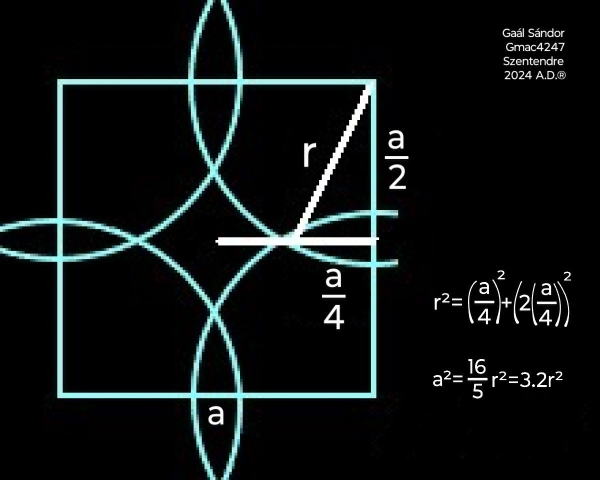
The area of a circle is defined by comparing it to a square since that is the base of area calculation.
The circle is cut to four quadrants, each placed with their origin on the vertices of a square.
In this layout the arcs of the quadrants of an inscribed circle would meet at the midpoints of the sides of the square.
The arcs of the quadrants of a circumscribed circle would meet at the center of the square.
When the arcs of the quadrant circles intersect at the quarter of the centerline of the square, the uncovered area in the middle equals exactly the sum of the overlapping areas respectively.
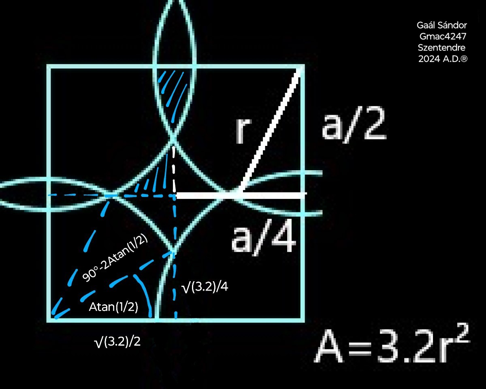
Quarter of the uncovered area in the middle:
The area of an overlapping section:
The equation is calculable using a calculator, or it can be simplified algebraically.
Simplifying the original equation:
Simplifying further:
Substituting 90°/360° for 1/4:
Simplifying further:
Which is equivalent to:
1 = 1
The ratio between the radius of the circle and the side of the square can be calculated by using the Pythagorean theorem.
The area of both the square and the sum of the quadrants equals 16 right triangles with legs of a quarter and a half of the square's sides, and its hypotenuse equal to the radius of the circle.
Area of a circle segment
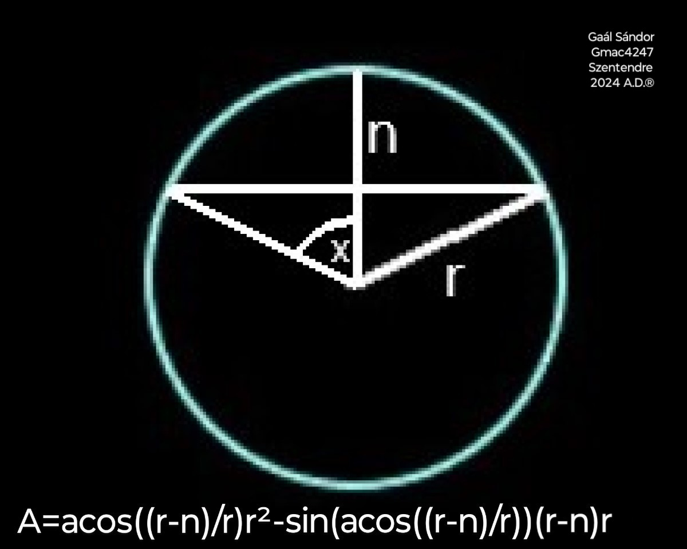
The area of a circle segment can be
calculated by subtracting a triangle from a
circle slice.
Circumference of a circle
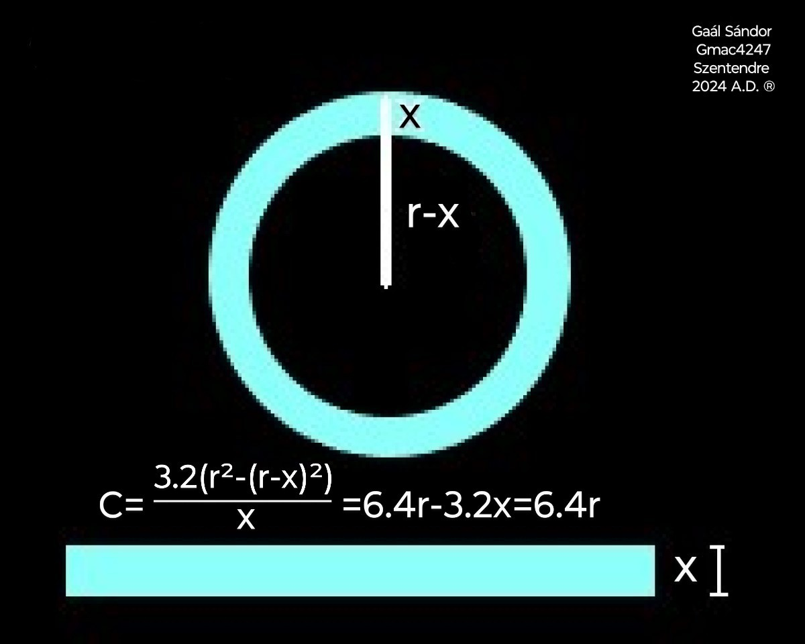
The circumference of a circle can be derived
from its area algebraically.
The x represents the width of the circumference, which is just theoretical, hence a very small number.
The difference between the shape of the straightened circumference and a quadrilateral is negligible.
The length of the two shorter sides of the quadrilateral is x.
The length of the two longer sides is the area of the resulting ring divided by x.
Expand the term (r - x)²:
Substitute this back into the original expression:
Distribute the 3.2 inside the parentheses:
Simplify the numerator:
Factor out x from the numerator:
Cancel out the x in the numerator and denominator:
As x is close to 0,
C = 6.4 × radius.
In calculus terms:
The constant relationship between a circle's circumference and its diameter has captivated mathematicians for millennia.
While its approximate value of 3.14, commonly denoted by the Greek letter π, is widely recognized today, the historical development of this concept is less understood.
Ancient civilizations grappled with this geometric challenge, employing various methods to approximate this ratio.
The Babylonians initially estimated it as 3, later they calculated with 3.125.
A Greek mathematician is credited with refining these approximations through the method of inscribed and circumscribed polygons.
His approach was that the ratio between the perimeter and the diameter of a circle can be estimated by comparing the circumference of the circle to the perimeters of an inscribed and a circumscribed polygon.
The polygons can be divided into triangles. The ratio between the legs of the triangles and their hypotenuses can be measured linearly.
That is where the pi divided by delta = 3.14 notation might originate from.
This method has several limitations. He tried to increase the accuracy by increasing the number of sides of the polygons. This approach cannot produce an accurate result.
Where the perimeter-based estimation went wrong:
- aside of that it's just an approximation instead of an exact calculation -
The in- and circumscribed polygons method seems logical, but there's a catch. It's based on the assumption that the circle maximizes the area with a given circumference. That assumption is false. It's obviously true in the case of an isoperimetric triangle and a square, but it becomes less and less obvious with the increase of the number of the polygon's sides. Until eventually it is not even true.
Imagine a side of a polygon with a number of sides approaching infinity.
The angles between the side and the diagonals approach a right angle. They never reach a right angle as the diagonals converge towards the center. If we relate the arc of a corresponding slice of an isoperimetric circle, the length of the arc equals the side in question. So the chord related to the arc is shorter than the side. If we want to place the arc with the chord so that it touches both diagonals, it has to be within the polygon. With the curvature of the arc becoming decreasingly distinctive, it doesn't bulge beyond the side. Eventually it will not even touch the side. Hence the polygon with the same number of sides, which circumscribed the circle is smaller, so its perimeter is shorter than the circle.
The perimeter of the circumscribed polygon that was believed to be an overestimate of the circumference was practically an underestimate of it.
Hence the value of the π lies between two underestimates.
The same coefficient was used to calculate the ratio between the area and the squared radius of a circle.
Despite these early advances, a precise, universally accepted value of this constant remained elusive for centuries.
Being uncertain about its numeric value and how to calculate it, it was comfortable to denote it by a sign in the equations.
It was not until the 18th century that the symbol π, popularized by the mathematicians of the time, gained widespread acceptance.
Several complex formulas were introduced by different mathematicians, aimed at more accurately estimating this ratio, based on a theoretical polygon with an infinite number of sides.
All of the above mentioned approximation methods have one thing in common. They are estimating the perimeters of polygons and do not account for the curved shape of the circle.
Historical records suggest that a legislative process took place in 1897, Indiana, USA, known as House Bill 246, or Indiana Pi Act, aiming to replace the numeric value 3.14 by 3.2.
Unfortunately, the exact details of the proposed method in the Indiana Pi Bill are somewhat obscure and have been interpreted differently by various accounts.
The π is a fundamental constant in the geometry of idealized circles and plays a crucial role in many mathematical theories.
My work, however, suggests that when we move from these idealizations to the measurement of real objects, a slightly different constant, 3.2 emerges as more relevant for accurately describing their properties.
By focusing on area relationships and direct comparisons between shapes, the above method emphasizes a more intuitive and potentially more fundamental understanding of geometric concepts.
Volume of a sphere
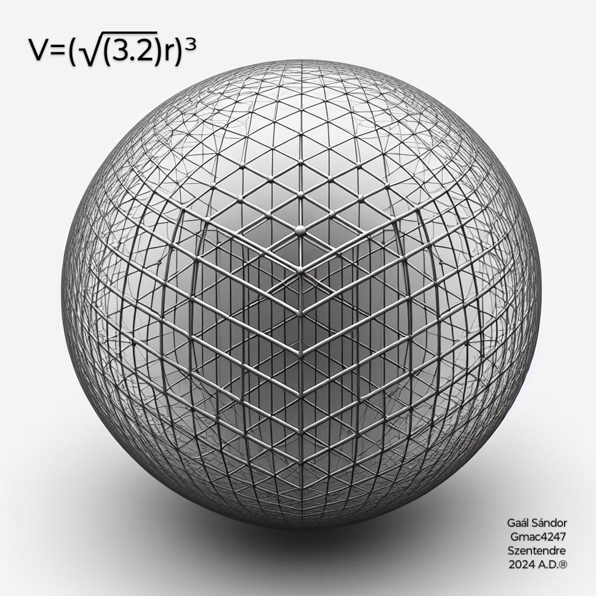
The volume of a sphere is defined by comparing it to a cube, since that is the base of volume calculation.
Just as the volume of a cube equals the cubic value of the square root of its cross sectional area, also the volume of a sphere equals the cubic value of the square root of its cross sectional area.
The edge length of the cube, which has the same volume as the sphere, equals the square root of the area of the square that has the same area as the sphere's cross section.
Volume of a spherical cap
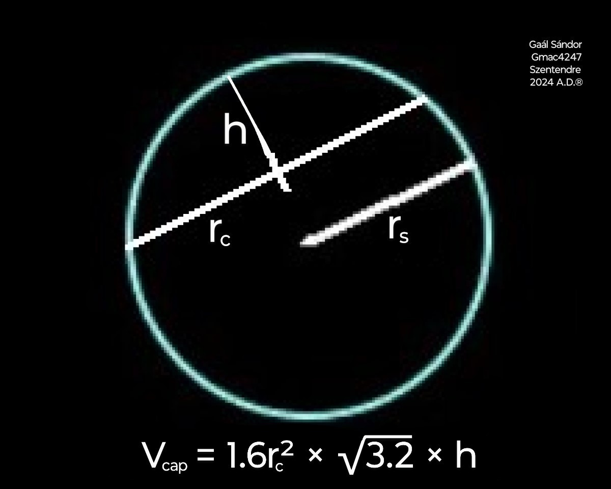
In terms of cap radius and height:
Volume of a cone
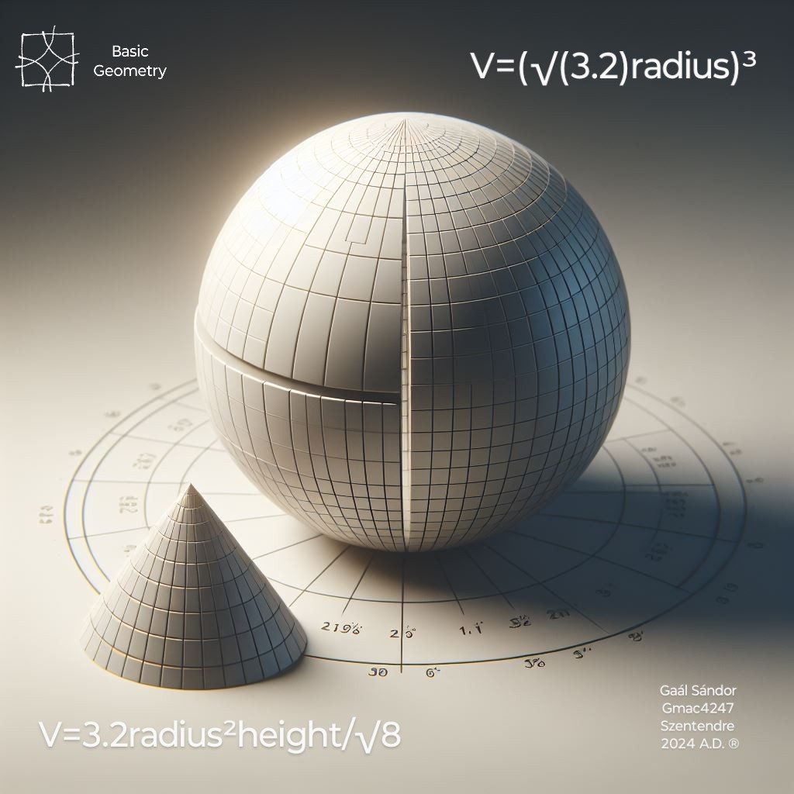
The volume of a cone can be calculated by algebraically comparing the volume of a quarter cone with equal radius and height to an octant sphere with equal radius, through a quarter cylinder.
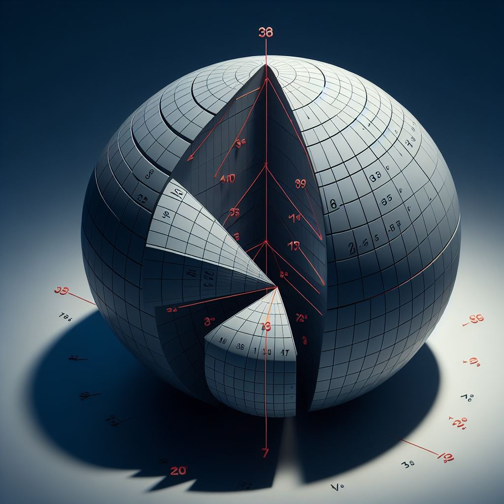
The base of the two shapes is a quarter circle.
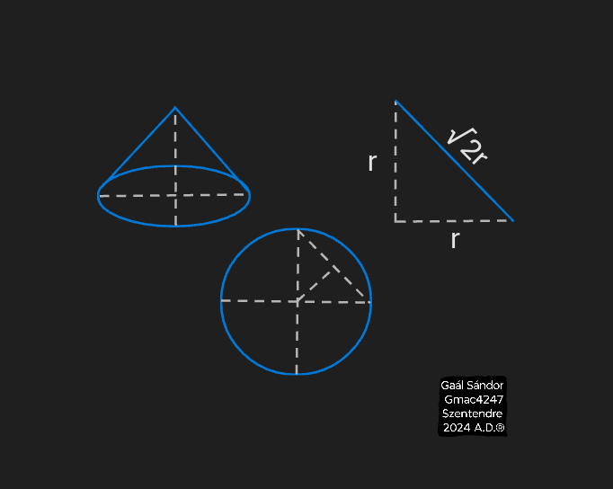
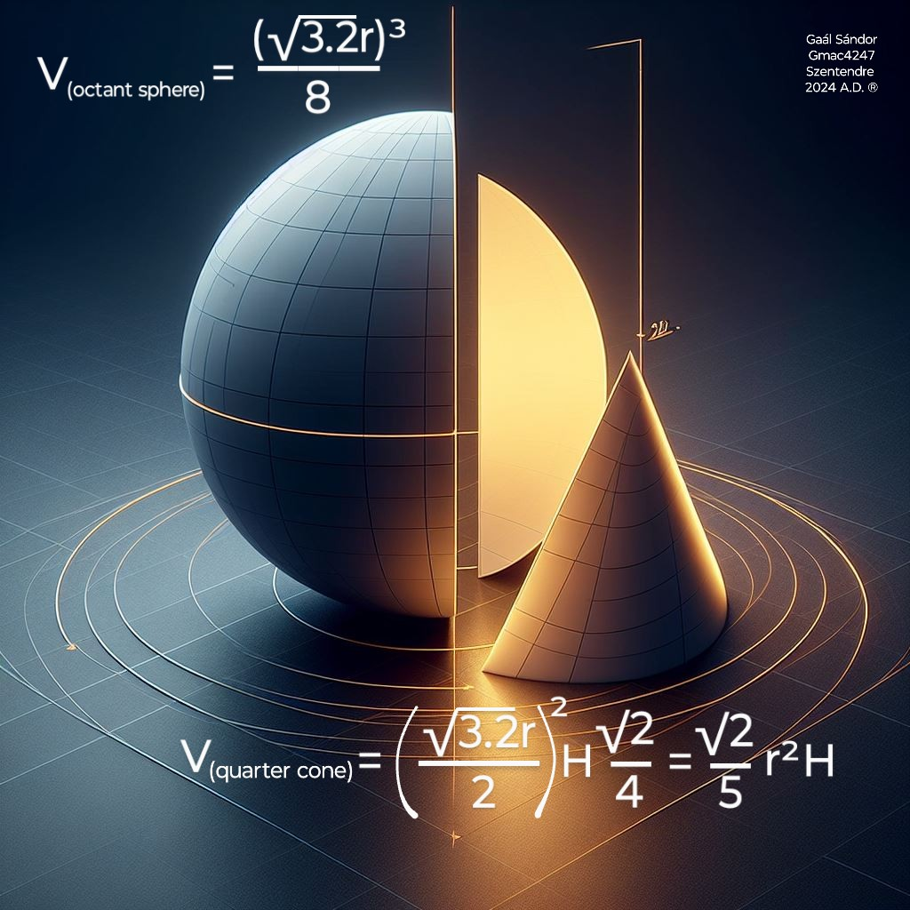
The slant height of the quarter unit cone is √2 × radius.
The volume of a quarter cylinder with the same base, and height equal to the slant height of the cone would be
The slant shape comes with a triangular vertical cross section.
The area of a cone's vertical cross section is the half of a cylinder's with equal base and height.
The intermediate of the areas of the horizontal cross section slices of a cone is the half of a cylinder’s.
Volume of a frustum cone
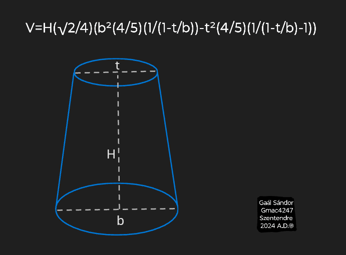
The volume of a frustum cone can be
calculated by subtracting the missing tip
from the theoretical full cone.
Surface area of a cone
Volume of a pyramid
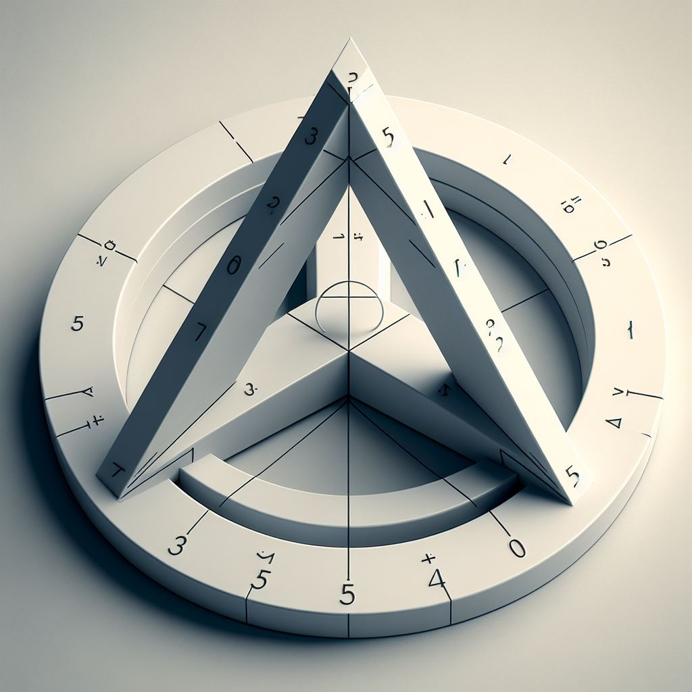
The volume of a pyramid can be calculated
with the same coefficient as the volume of a cone:
Volume of a horizontal square frustum pyramid
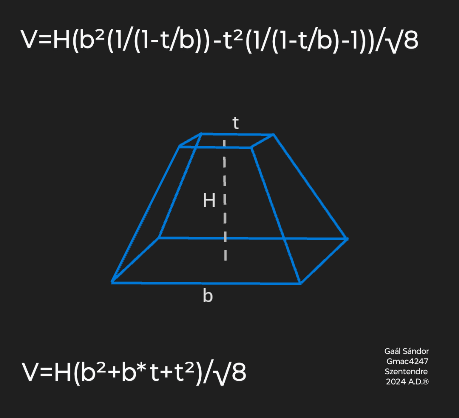
The volume of a frustum pyramid can be
calculated by subtracting the missing tip
from the theoretical full pyramid.